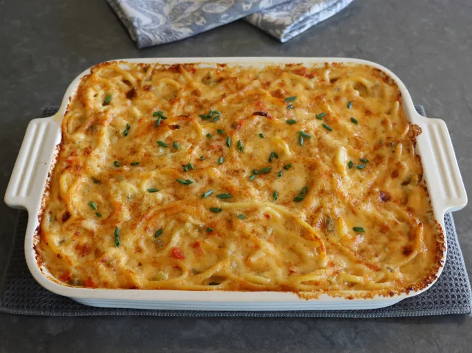

New Orleans Mac and Cheese Recipe

Description
This New Orleans Mac and Cheese recipe is a creamy, cheesy delight with a hint of spice. Perfect for a comforting meal, it's made with a blend of cheeses and topped with a crispy breadcrumb crust.
Ingredients
- 1 pound elbow macaroni
- 4 cups shredded sharp cheddar cheese
- 2 cups shredded mozzarella cheese
- 1 cup grated Parmesan cheese
- 4 cups whole milk
- 1 cup heavy cream
- 1/2 cup unsalted butter
- 1/2 cup all-purpose flour
- 1 teaspoon garlic powder
- 1 teaspoon onion powder
- 1/2 teaspoon smoked paprika
- 1/4 teaspoon cayenne pepper (optional)
- Salt and black pepper to taste
- 1 cup panko breadcrumbs
- 2 tablespoons chopped fresh parsley (for garnish)
Steps
- Preheat your oven to 350°F (175°C). Grease a large baking dish.
- Cook the elbow macaroni according to package instructions until al dente. Drain and set aside.
- In a large saucepan, melt the butter over medium heat. Once melted, whisk in the flour and cook for about 1-2 minutes until it forms a roux.
- Gradually whisk in the milk and heavy cream, ensuring there are no lumps. Continue to cook, stirring frequently, until the mixture thickens, about 5-7 minutes.
- Remove the saucepan from heat and stir in the garlic powder, onion powder, smoked paprika, cayenne pepper (if using), salt, and black pepper.
- Add the shredded cheddar, mozzarella, and Parmesan cheeses to the sauce. Stir until all the cheese is melted and the sauce is smooth.
- Combine the cooked macaroni with the cheese sauce, ensuring all pasta is well coated.
- Pour the macaroni and cheese mixture into the prepared baking dish. Sprinkle the panko breadcrumbs evenly over the top.
- Bake in the preheated oven for 25-30 minutes, or until the top is golden brown and crispy.
- Remove from the oven and let it cool for a few minutes before serving. Garnish with chopped fresh parsley if desired.